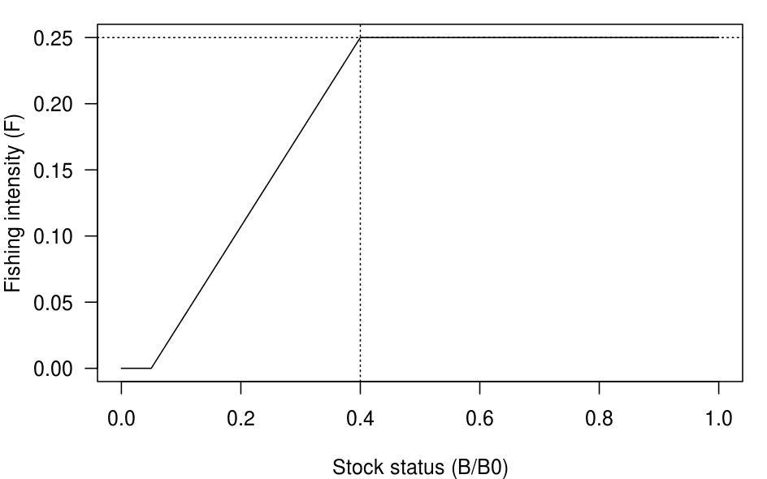
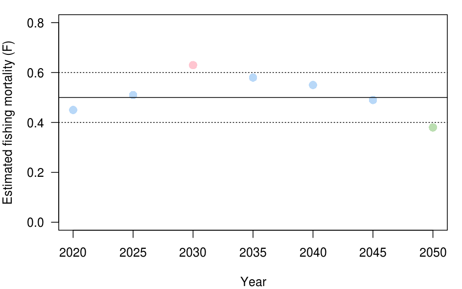
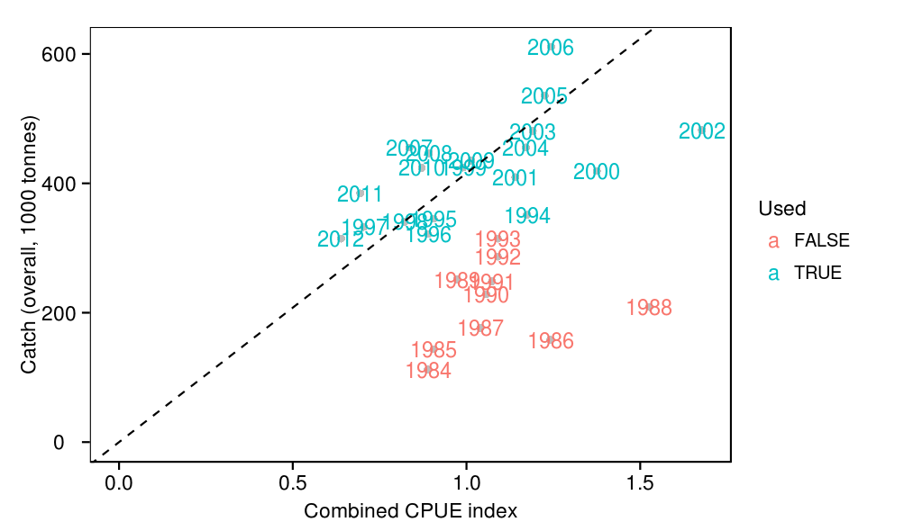

# Include common R settings and functions for this project
source('../../common.R',local=T)
Several classes of management procedure (MP) are considered with each class having several control parameters which can be varied to alter it's behaviour. We refer to a particular combination of control parameters for a class as an instance of that class.
The classes of management procedure used here are mainly intended to illustrate the wide variety of possible MPs: the data inputs they use, their algorithmic form and the management controls which they alter (e.g. effort versus catch).
BRule class
The BRule class of MP is similar to generic harvest control rules that have been suggested in other tuna fisheries (e.g. SCRS 2011, Scott et al 2013). It assumes that an estimate of stock status is available from an assessment conducted on a regular basis and uses a simple relation between stock status and fishing intensity. Here we define relative stock status as ratio of current spawner biomass as a proportion of the prinstine spawner biomass, , and relative fishing intensity as the instantaneous rate of fishing mortality . For this study we have investigated the impact of alternative levels of stock assessment precision and implementation error on performance statistics.
In each year the relative biomass is estimated through a stock assessment,
where is a lognormally distributed multiplicative error with mean of 1 and standard deviation of ,
Using the recommended fishing intensity () is calculated. If then,
If then,
Otherwise,
The recommended fishing intensity is applied to the fishery in the following year,
Table 1 provides a summary of each of the control parameters of BRule and their respective values evaluated in this study. Note that IOTC Resolution 13/10 set an interim limit target biomass of (i.e. ) and an interim limit biomass of (i.e. = 0.4). IOTC Resolution 13/10 also includes a limit reference point of .
| Parameter | Symbol | Description | Values evaluated |
|---|---|---|---|
| Frequency | Frequency of assessments of stock status | 2 | |
| Estimation precision | Precision with which relative stock status is estimated | 0.2 | |
| Threshold stock status | Relative stock status below which recommended fishing intensity is reduced | 0.2, 0.3, 0.4 | |
| Limit stock status | Relative stock status below which recommended fishing intensity is zero | 0.025, 0.05, 0.1 | |
| Target fishing intensity | Relative fishing intensity | 0.2, 0.25, 0.3 |
s_l <- 0.05 s_t <- 0.4 f <- 0.25 s_hats <- seq(0,1,0.01) f_dots <- f/(s_t-s_l)*(s_hats-s_l) f_dots[s_hats<s_l] <- 0 f_dots[s_hats>s_t] <- f par(mar=c(4,4,1,1)) plot( s_hats,f_dots,type='l', ylab='Fishing intensity (F)', xlab='Stock status (B/B0)', las=1 ) abline(h=f,lty=3) abline(v=s_t,lty=3)
FRange class
FRange
seeks to maintain the fishing mortality rate within a defined range. At periodic intervals, defined by the control parameter , is estimated (e.g. from a stock assessment or a tagging study) with a defined level of precision, ,
where is a lognormally distributed multiplicative error with mean of 1 and standard deviation of ,
The estimated fishing mortality is compared to a range defined by two control parameters, the centre of the range and the buffer, or width, of the range.
| Parameter | Symbol | Description | Values evaluated |
|---|---|---|---|
| Frequency | Frequency of estimation of F | 2, 5, 7 | |
| Estimation precision | Precision with which F is estimated | 0.2 | |
| Target fishing intensity | 0.2, 0.25, 0.3 | ||
| Buffer around target fishing intensity | 0.01,0.02,0.05 | ||
| Maximum change | Maximum allowable percenatge change in effort | 0.4 |
f <- 0.5 b <- 0.1 t <- 0.9 ts <- c(2020,2025,2030,2035,2040,2045,2050) f_hats <- c(0.45,0.51,0.63,0.58,0.55,0.49,0.38) colours <- hcl(c(120,240,0))[c(2,2,3,2,2,2,1)] par(mar=c(4,4,1,1)) plot( ts,f_hats,col=colours,cex=1.5,pch=16, xlab='Year',ylab='Estimated fishing mortality (F)', las=1,ylim=c(0,0.8) ) abline(h=f,lty=1) abline(h=c(f-b,f+b),lty=3)
IRate class
This management procedure uses CPUE as an index of biomass and sets a total allowable catch (TAC) that, over most of the range of CPUE, is proportional to that index.
# Some preparatory code for figures below
catch <- read.table('../../parameters/input/catches.tsv',header=T)
catch <- ddply(catch,.(year),summarise,catch=sum(value))
m_pl_cpue <- read.table('../../data/input/m_pl_cpue.tsv',header=T)
m_pl_cpue <- ddply(m_pl_cpue,.(data_year),summarise,m_pl_cpue=exp(mean(log(location))))
temp <- merge(catch,m_pl_cpue,by.x='year',by.y='data_year',all.x=T)
w_ps_cpue <- read.table('../../data/input/w_ps_cpue.tsv',header=T)
w_ps_cpue <- ddply(w_ps_cpue,.(data_year),summarise,w_ps_cpue=exp(mean(log(location))))
temp <- merge(temp,w_ps_cpue,by.x='year',by.y='data_year',all.x=T)
# Create a combined CPUE series
temp <- within(temp,{
# Geometric mean combination
combined <- sqrt(m_pl_cpue*w_ps_cpue)
combined[is.na(m_pl_cpue)] <- w_ps_cpue[is.na(m_pl_cpue)]
})
print(
ggplot(melt(subset(temp,year>1980)[,c('year','m_pl_cpue','w_ps_cpue','combined')],id.vars=c('year')),
aes(x=year,y=value,colour=variable,shape=variable)) +
geom_point(size=3,alpha=0.6) +
geom_line(alpha=0.6) +
geom_hline(y=0,alpha=0) +
scale_shape_manual(values=1:3) +
labs(x='Year',y='CPUE index',colour='Index',shape='Index')
)
scalar <- with(subset(temp,year>=1994),exp(mean(log(catch/combined),na.rm=T)))/1000 print( ggplot(temp,aes(x=combined,y=catch/1000)) + geom_point(colour='grey') + geom_text(aes(label=year,colour=year>=1994),size=4) + geom_hline(y=0,alpha=0) + geom_vline(x=0,alpha=0) + geom_abline(intercept=0,slope=scalar,linetype=2) + labs(x='Combined CPUE index',y='Catch (overall, 1000 tonnes)',colour='Used') )
In each year, a smoothed CPUE, is calculated using an exponential moving average with the responsivesness control parameter, :
temp <- subset(temp,!is.na(combined))
smooths <- NULL
for(r in c(0.5, 0.65, 0.8, 1.0)){
index <- temp$combined[1]
for(row in 2:nrow(temp)){
c <- temp$combined[row]
i <- r*c + (1-r)*index[row-1]
index <- c(index,i)
}
smooths <- rbind(smooths,data.frame(r=r,year=temp$year,smooth=index))
}
names(smooths) <- c('r','year','smooth')
smooths$r <- factor(smooths$r)
print(
ggplot(smooths,aes(x=year,y=smooth,colour=r,shape=r)) +
geom_line() +
geom_point(data=subset(smooths,r==1),shape=1,colour='black') +
geom_hline(y=0,alpha=0) +
labs(x='Year',y='CPUE index',colour='Responsiveness')
)
Higher values of produce greater responsiveness because they put more weight on more recent values of CPUE and produce a index that is less smoothed. When there is no smoothing and . Smoothing may be advantageous in that it reduces the influence of annual random variation in CPUE due catchability or operational variations. However, smoothing also reduces adds a lag to the index.
Using the recommended catch scaler () is calculated. If then,
If then,
Otherwise,
i_l <- 0.2 i_t <- 0.8 m <- 1.1 i <- seq(0,1.5,0.01) s_hat <- 440 s <- (m*s_hat)/(i_t-i_l)*(i-i_l) s[i<i_l] <- 0 s[i>i_t] <- m*s_hat tac <- i*s tac[tac>600] <- 600 layout(matrix(c(1,2), 2, 1, byrow=F)) par(mar=c(4,4,0,0),oma=rep(1,4)) # TAC versus CPUE plot( i,s,type='l', ylab='Biomass index to Catch scaler', xlab='', las=1,ylim=c(0,s_hat*1.2),xlim=c(0,1.5) ) abline(h=s_hat,lty=3) abline(v=1,lty=3) # TAC versus CPUE plot( i,tac,type='l', ylab='Recommended TAC (t)', xlab='CPUE index', las=1,xlim=c(0,1.5) ) abline(0,b=s_hat,lty=3) abline(v=1,lty=3)
The recommended catch scaler is used to calculate a recommended TAC, , by multiplying the harvest rate by the biomass index,
which is applied to the fishery in the following year,
where is a lognormally distributed multiplicative error with mean of 1 and standard deviation of ,
| Parameter | Symbol | Description | Values evaluated |
|---|---|---|---|
| Responsiveness | Degree of smoothing in biomass index | 0.5 | |
| Target harvest rate muliplier | Target harvest rate relative to historic levels i.e 0.9 = 90% of historic average | 0.8, 0.9, 1.0, 1.1 | |
| Threshold biomass index | Biomass index at which the harvest rate is reduced relative to historic levels i.e. 0.7 = reduce harvest rate when the biomas index is at 70% of historic levels | 0.5, 0.6, 0.7, 0.8 | |
| Limit biomass index | Biomass index at which harvest rate is zero relative to historic levels i.e. 0.2 = close the fishery when the biomas index is at 20% of historic levels | 0.05, 0.1, 0.2 | |
| Maximum change | Maximum allowable percenatge change in effort | 0.4 | |
| Maximum TAC | Maximum total allowable catch (thousand tonnes) | 300, 400, 500, 600 |